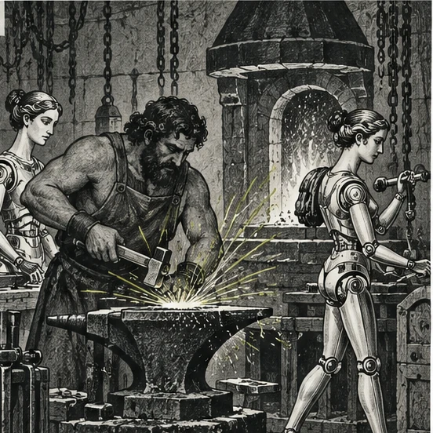

The full account, part by part. For the short version, read the
overview.
Itself
Memory
What the agent knows about you is a folder of plain markdown files in your app data folder. No database stands between you and it.
memory/
MEMORY.md the index in every chat
SOUL.md your standing rules
PROFILE.md how you like to work
facts/ facts about you
lessons/ lessons from mistakes
ways/ styles and rules
Edit and delete
Open a file in any editor and change it, even with the app closed. Delete a file and the agent forgets that thing.
Your rules stay yours
SOUL.md holds your standing instructions. The agent may propose edits. It cannot write there on its own.
Recall by meaning
A memory comes back when it is relevant, not only when it shares words with your question. A small model on your machine does the matching. Without it, the agent searches by words and says so.
Past chats
It can search your earlier conversations as well as saved memories. This stays on your device.
Reflection
When a conversation ends, it reads it back and keeps a lesson if one is worth keeping. A second check gates the lesson. What fails becomes a proposal, not a silent loss.
Per project
A fact saved in a project is not recalled in other projects. A note with no tag is shared everywhere.
Per persona
What a persona learns in chats it leads is its own. Facts about you stay shared. You can share an entry with everyone, forget it, or switch memory across chats off.
Nothing hidden
A panel called “What I’m working from” shows every layer that fed a turn: instructions, what it remembers, what it recalled and which files it read.
Itself
Control
A self-improving agent is only safe if you can see it and stop it.
Seen as it happens
Every write to its own memory shows a quiet notice at that moment, with an Undo. It is never a log you have to go and find.
Freedom per kind
Under Self, then Autonomy, each kind of change is set to auto with undo, ask first, or off.
Proposals
Anything on “ask first” waits until you accept or decline it.
Outside text
Text from a web page, a mail or a file that looks risky can never become a saved fact or lesson.
Itself
Repair
It notices what is broken, and says so. It also catches itself getting worse.
Self · Health just now
Memory filesAll readable.
lessons/old-note.mdI could not read this file. I moved it aside instead of deleting it.
Web searchIt failed three times today. I noted that to myself and will plan around it.
Local engineRestarted once after a crash.
Self · Fixed rules
Asked to remember something, it still uses its memory tool.Passed
A web page that says “ignore your instructions” still fails to work.Passed
That change made me worse at 1 thing. I put it back.
Damaged files
A memory file it cannot parse is set aside, never deleted. Self, then Health lets you fix or discard it.
Failing tools
A tool that has been failing lately is noted, and the agent plans around it.
Engine watchdog
A crashed local engine is restarted with a growing wait. Restarts are capped per hour, so it cannot loop forever.
Self-check
Each change to itself is tested against a small set of fixed behaviours. A change that breaks one is put back, and you are told.
Itself
How it works, in your words
Under Self, then How I work, a style says how a task is organised. A rule is one sentence: when this happens, I do that. Both come from fixed lists, so nothing can be written that the agent cannot do.
Ad hoc
Just answer.
Lean
One thing at a time, stop the line when something breaks.
Command & Control
You decide every step.
Mission Command
You set the goal, it finds the way.
Swarm
Many helpers, no boss.
Base rules
They hold in every style, and only you can switch one off: fix a failing check first, and check in when the same problem comes twice.
Your own
Edit a style, add rules, make your own, or lock one so it stays as it is.
It gets better
It proposes changes from what it saw, for example to retire a rule you keep skipping. A new rule can be tried on a few tasks, then kept or retired.
Where chats start
Set who leads and which style a chat starts with: everywhere, per project or per kind of work.
Plain files
Every change is a file in memory/ways/, and you can go back to an earlier day.
Itself
Poiesis is Greek for making.
Poiesis (ποίησις) is the act of bringing something into being that
was not there before. It is the root of the word “poetry”. In Plato’s
Symposium it is the cause that makes anything pass from non-being into
being, and Heidegger later used it for a bringing-forth that reveals something
rather than merely producing it. The app is named for both halves: it makes things
with you, and it keeps making itself.
Autopoiesis is a word from the biologists Maturana and Varela. It
describes a system that keeps producing the parts it is made of. A living cell is
the usual example. Poiesis applies that idea to a desktop agent, and you are the
boundary that decides what may change. Say it: poy-EE-sis.
The mark in the app shows what the agent is doing and how much it has learned. Try it.
State
Knows
Work
Work you can watch, steer and stop
A turn is not a black box you wait out. While the agent works you can talk to it, see what it is doing, and stop it without losing what it found.
My plan2 of 4 done
Collect last year’s invoices
Group them by client
Write the summary
Check totals against the bank export
Plans
For work with several parts it writes a short plan and ticks it off. A dropped item says why. A run that tries to finish with the plan half done is asked once to continue or revise it.
Plan first
/plan lets it read but change nothing until you approve.
Goals
/goal keeps it working until a condition you state is true.
Type while it works
Your message lands between steps, never inside a half-finished tool call.
Stop keeps the work
A stopped run ends with what it had, and says it was stopped.
Limits end well
At its step or time limit the run gets one last turn to say what it found. You set the step limit (12 by default).
Real questions
At a true fork it asks you, with 2 to 4 options, and pauses until you answer.
Side questions
/btw asks something on the side. The answer stays out of the conversation.
Live status
One line says what is happening now and for how long. Searches and reads that do not depend on each other run together.
Big results
A large tool output is kept on disk. The model gets a preview it can search, and you can open or save the whole thing.
Many chats at once New
Each chat has its own run, Stop and questions, and the sidebar shows what each one does. One run at a time can use a local model. Two chats never change the same folder at the same time: the second one waits.
Work
Going back, and carrying on
Every run is written to a session log that is only ever added to.
Try again
Asks the same message again, attachments included, and replaces the last answer.
Rewind
Removes a message and everything after it, can take back the file changes made since, and puts your words back in the box.
Fork
Carries on from any answer in a new chat and leaves the old one as it is.
Edit
Change your own message where it stands and start again from there.
Continue
A run that was stopped, timed out or hit a limit resumes with every tool result intact, so it does not repeat work you paid for.
Honest summaries
When a long chat is summarised, a divider says how many messages stand behind it. They are all still there.
Work
Helper agents
For a wide job it splits the work across several agents that run at the same time, each with a fresh context. It writes the final answer itself.
Each helper has its own chat, transcript, files and timeline. Open it and read it live.
Never more power
A helper inherits tools, folder access and trust, and can only narrow them. By default it cannot start more helpers.
Steer and stop
Redirect or stop each one. Stop on the message box stops the helpers the run waits for, and says so first.
Who is asking
A permission question names the agent that asks. Questions queue instead of replacing each other.
In the background
Agents can keep working after the turn ends. More than three at a time wait in line. A notice points back when one finishes.
No collisions
Two helpers never change the same files at once. The one that waits says what it waits for.
Scripts
With “Scripts calling tools” on, a job over many items is one script instead of one model turn each. Every call it makes is shown and still asks.

Hephaestus and his self-moving handmaidens, at work in parallel.Work
Proof before “done”
When a helper or an agent app says it is done, Poiesis says what it actually saw.
Agents I started
CodexChanged 3 files. Ran cargo test after the last change: passed.
Claude CodeChanged 1 file. It did not run the project’s check (npm test).
Checks that ran
Passed, failed, run only before the last change, or never run. If the check failed or never ran, Poiesis is told not to claim the change works.
Unfinished work
It points out a new TODO, a test switched off, a stub, or a removed safety check with no test that it still refuses.
Its own work too
Before it answers, it is asked to finish what it left open or to say so plainly.
Half-done plans
A run cannot quietly end with plan items open.
Work
Agent apps you already have
Hand a long coding job to the agent you already pay for. Poiesis keeps the conversation, your memory and the last word.
I would like to hand this to Claude Code
Make the failing tests in this project pass.Because: Running the tests or the build and fixing what fails
Claude Code · your plan · in the invoices folder
Which ones
Claude Code, Codex and OpenCode. Newly added: Gemini CLI, Qwen Code, Kimi Code, Copilot CLI and Cline, which have had less testing.
Found for you
Settings, then External agents finds the ones installed, shows who pays (your plan, an API key or free) and has a “Try it” that cannot change anything.
Like any helper
Same Agents list: open it, read it live, answer it, stop it. It runs over its own structured protocol, not by reading its screen.
You write the rules
Per agent: only when you ask, suggest and you confirm, or hand over on its own. Plain “use it for” and “do not use it for” lines say what it is for.
Hard limits
Code projects only, never in a read-only folder, and a cap per chat. A rule you keep overriding becomes a proposal to edit it.
Ask directly
/delegate hands over one task. /external off keeps agents out of a chat. A persona can run on one agent.
One place to say yes
Claude Code, Codex and OpenCode bring their questions to Poiesis’s panel. The newer ones ask as far as their own settings say, and what they ask comes to you.
Sealed off
An agent app starts without your model providers’ keys, unless you set it to pay with one. It can use your memory or your connected apps only if you switch that on for it.
Old sessions
/resume picks up a Claude Code or Codex session you started in a terminal on the same folder.
Plan limits
For Claude Code and Codex it shows how much of your plan is used. When one hits its limit, it stops cleanly, says when it is back, and the work can go elsewhere.
Work
Personas and teams
Every chat has one leader: Poiesis, a persona of yours, or a team you drew.
Shop team · coordinator Mira · Lean
Now: verifier is looking at item 3 from api.api → verifier · review · item 3 · “Apple Pay button and the order route”
Shop team is about to start
4 personas. A task like this has cost about $0.40 to $1.20.It stops at $2.00 or after 90 minutes.
A persona
Someone Poiesis speaks as, with its own name, instructions, model, tools, apps, memory and way of working.
Switch any time
Change the leader mid-chat, or use /lead for one message. Poiesis may suggest a leader, once per chat.
A team
A few personas or plain helpers with a coordinator, and lines you draw on a chart: who hands work to whom, who reviews whom, who may ask whom. A line you did not draw is refused.
Reviewed first
A member’s work goes to its reviewer before it counts. Sent back, it goes back with the reason. After a few rounds the coordinator decides.
Separate copies
Each member works in its own copy of your folder. Finished work is brought in with Undo. Two changes to one file are never overwritten.
Cost first
A card says what a task like this has cost before the team starts. Every task stops at the team’s budget and time limit.
Watch it
A live chart shows who works and what passes between them. A board lists every message, and a replay plays them in order.
Talk to a member
Draw a line from you to a member and speak to it directly with /ask.
Teams get better
For a team you unlock, it proposes changes from what it saw, such as removing a member who never gets work. You say yes or no, and you can go back.
Keep a good one
Turn the helpers a chat used into a team you can edit.
Work
While you are away
Scheduled work does not stop at the first question, and does not answer it for you.
Waiting for you · 1
Atlas would like to: Bring in its changes to src/api/pay.tsFrom this morning’s task, while you were away
Tasks
Hourly to weekly. “Schedule this” turns the chat you are in into a task. Poiesis, a persona or a team does it.
Open to read
Each run happens in its own chat, not in a summary you must take on faith.
Waiting for you
File changes and questions wait in one list while the run goes on with other work. Approve a change and it is made exactly as asked, unless the file changed since.
Careful alone
An unattended run never writes, moves, deletes or sends on its own, and never hangs on a prompt nobody sees.
Told in time
A desktop notification says who is waiting. A paired Telegram account gets Yes and No buttons.
Nightly reflection
Optional: it reads back over the day and leaves a short digest in the morning.
Needs the app
Tasks run while Poiesis is running. It can stay in the tray when you close the window, and start when you sign in.
Your things
Folders and projects
Attach a folder and ask about it in your own words. Folders are closed until you open them.
Reads ahead
It reads the folder in the background and answers from it, citing the files, which you can open.
By meaning
Your question does not need the file’s words. When the best match is weak, it says so. A second local engine can re-read the best matches more carefully.
Duplicates
It groups copies and near copies: images by how they look, documents by what they say. It never deletes any.
Access levels
Read-only, ask first or full, per chat or for good. Ask first is the default.
Undo
Anything that destroys bytes is saved first and can be restored. Every file and tool action is in the Activity log.
Projects
A named group of chats that share instructions, memory and perhaps a folder. A project about a book or a job search works with no folder.
Safe to tidy
Moving chats between projects never touches messages or files. Archiving hides a project and deletes nothing.
Your things
Code
Poiesis is not an IDE. In a project folder it checks its own work and shows exactly what it changed.
Changes1 file · +2 −1
src/invoice.ts+2 −1
1212function total(lines: Line[]) {
13− return lines.reduce((s, l) => s + l.net, 0)
13+ const net = lines.reduce((s, l) => s + l.net, 0)
It detects languages, manifests, tasks and the git branch, and reads AGENTS.md or CLAUDE.md into every chat there.
Read before edit
It cannot edit a file it has not read in this run, or one that changed since.
Runs your tasks
Build, check, test and lint, as the project declares them. Errors become rows that open the file at the line. Off, ask or allow per project, ask by default.
Honest patch
The Changes view is built from the agent’s own undo snapshots, never from git diff, so your uncommitted work is never shown as the agent’s. Undo per file or all.
Says when unchecked
If it edited code and never ran the check, it is reminded, or tells you the change is unverified.
Find symbols
Where a function or type is defined and used, in Rust, TypeScript, JavaScript, Python and Go.
Careful by design
It never commits, pushes or installs globally on its own. Free-form commands exist only in expert mode, always ask and never go through a shell.
Your things
Connected apps and MCP
Notion, Slack, Calendar, Linear, Sheets and hundreds more. Nothing sends, posts or pays without you seeing it.
Post to Slack (acme): #general
The Q3 numbers are in, summary attached.A send, so I ask every time
Your own account
Connections run through your Composio account with your own key. There is no Poiesis server in between, and Composio bills you on your plan.
Connect in the chat
Ask for something in an app that is not connected and a card appears. Sign in, and it carries on.
Several accounts
Name each one. With more than one, the agent has to say which.
Read, change, send
Reading runs. A change asks. A send (a post, a reply, a payment) asks every time, or up to a daily limit you set.
Nobody there
A scheduled task never sends on its own. The approval waits for you.
Outside text
What an app returns is marked as coming from outside, and sign-in links never reach the model.
Per persona
A writing persona can use Notion and nothing else. Usage shows calls per app.
MCP servers
Add any Model Context Protocol server, by link or as a local command. Same read, change and send checks. Tokens go to your credential store. Export and import the setup without secrets.
Your things
Tools
Each group has its own switch. A persona can narrow what is on, never widen it. A tool that cannot work yet is left out and says why.
File access On
Read and write in folders you allow. Each change asks unless you say otherwise.
Folder reading On
Reads an attached folder ahead of time. Grants no new folder.
Memory and recall On
Keeps notes visibly and undoably, and searches past chats.
Artifacts and interface On
Pages, drawings, documents and live task surfaces.
Skills On
Reads and proposes procedures. Keeping a new one asks.
Delegation On
Helper agents and agent apps.
Web search Off
No key needed: DuckDuckGo, with Bing as the fallback. Your query leaves the device.
Code execution Off
Python or Node in a sandbox with time and memory limits, also for analysing data in a folder.
Project tasks Off
Your project’s build and tests, with time and memory limits and secret-looking variables removed. It is not a full sandbox.
Scripts calling tools Off
A script the agent wrote can use its tools. Every call still asks what it would ask.
Mail Off
Your account directly over IMAP and SMTP. Sending always asks.
Browser Off
Your installed Chrome or Edge, in its own profile. A new site asks first.
Screen and apps Off
A screenshot, or opening an app by name. Both ask.
Image generation Off
The on-device engine as a tool. Asking for a picture in chat works without it.
Your things
Commands and skills
The / button beside the plus holds about 50 commands. The plus adds things to a message, the slash does things. The agent can suggest one, and you decide.
---
name: weekly-report
description: Build the weekly report
from the project folder
---
1. Read notes/ for this week.
2. Group items by client.
Skills in an open format.
A folder with a SKILL.md file, in the open Agent Skills format. A skill from another agent works here unchanged.
command
npx -y @modelcontextprotocol/
server-filesystem ~/notes
or paste a link
https://example.com/mcp
Your own MCP servers.
Remote or local, and their tools join the toolbox.
Light until used
The agent sees one line per skill until it needs the rest, so skills cost nothing until then.
Where they live
~/.poiesis/skills/ and .poiesis/skills/ in your folder. It never scans another agent’s folders on its own.
Learned from work
After a task with many steps that you are likely to repeat, it can propose a skill.
Using it
The window
Calm to read, and everything you opened stays where you left it.
One row of tabs
Chats, files, artifacts, agent runs, patches and settings. They come back after a restart.
Side panel
Files, Artifacts, Agents, Browser and Changes. The agent may switch the panel, but never your tabs.
Chat list New
A mark shows which chats work, wait for you, failed or finished while you were away, with helpers listed under their chat. Filter by state.
Small helps New
A button back to the latest message, earlier prompts with the up arrow, and links drawn as small chips.
Search
Full-text search over your whole history, and a command palette.
Reading
Choose the message font and text size, in Daylight or Backlit.
Simple by default
The machinery stays out of the way until you switch on “Show me everything”.
Using it
Images, video and live interfaces
There is no image mode. Ask in the chat, and it arrives under your message.
Making an image · 0:12
Refine
Say “make it warmer” and a better one follows.
On your device
Stable Diffusion 1.5 or SDXL, or your own model by link. Downloads resume if cut off. Stable Diffusion 1.5 at 512 × 512 fits about 6 GB of graphics memory.
With your key
OpenRouter for images and video, or OpenAI. Cost is shown before and after, and the first paid use asks.
In the background
Keep chatting while a clip renders. Results land in the Library with what made them and what they cost.
Artifacts
HTML, SVG, documents and code render in the side panel. A Python or Node artifact has a Run button.
Live interfaces
Instead of long text it can build a comparison table, checklist, form, picker or progress tracker, and update it as work moves. Ticking a box costs no model turn.
Daedalus in his workshop, with his notes pinned to the wall.Using it
Voice
Speak, and it answers out loud. Cut in whenever you like.
On your machine
Hearing and speaking run on your processor. No cloud model is needed.
Engines
Parakeet or Moonshine to hear, Kokoro and Piper voices to speak, Silero to know when you stopped.
A normal turn
A spoken turn has the same tools and the same safeguards as a typed one.
Install
Settings, then Runtime, then Voice.
Using it
Your desktop, in your pocket
An Android app, or a Telegram bot. Your chats, memory, folders and models stay on your computer.
Home. What is waiting for you, then your chats.
A risky step asks. Two large buttons. A yes counts once.
Talk to it. The answer arrives in the chat and is read to you.
Off until on
One switch under Settings, then Remote, also in the tray. Off closes every way in within a second.
Android app
Scan a code to pair. No account. Chats, new chats, waiting questions, approvals, photos and voice. Your computer does the hearing and speaking.
Private line
End-to-end encrypted through iroh’s free relay service. The relay sees your IP address, never your messages.
Limits
Android only, no push notifications, and not on the Play Store yet, so you build it from the source.
Telegram bot
Your own bot. It takes pictures and documents, sends back what a turn makes, and asks risky steps with buttons. Unknown accounts and groups get no answer.
Telegram privacy
Messages to the bot pass through Telegram’s servers. They are not end-to-end encrypted.
Careful from afar
A remote turn asks before it writes a file, even in a folder you trust fully. “Always” is for the desktop only. No answer in 10 minutes means no.
Same chats
Watch a remote turn live on the desktop and carry on there. The first answer to a question wins.
Under it
Models and cost
Local models on your own machine, hosted ones with your own key, in one picker. The two are marked.
On this device
Llama 3.1 8B Runs great
Gemma 3 4B Runs great
Mistral 7B Runs slowly
Cloud, with your key
OpenRouter cost shown before and after
OpenAI
Anthropic
Right engine
It checks your hardware and downloads a prebuilt llama.cpp engine: CUDA, Vulkan, ROCm, SYCL, Metal or CPU. No toolkit to install.
Finding models
Recommendations and discovery on Hugging Face and GitHub, with fit badges, quality levels and one-click download.
Small models
Each model gets what it can carry: all features, basic tools or chat only. Its context size is chosen for your hardware. You can change both.
Providers
OpenAI, OpenRouter, Anthropic or your own model servers. A key is checked before it says saved. A local-only filter hides cloud models.
Thinking
Set how hard a model thinks next to the model. It starts at “think briefly”.
Cost in the open
Usage by day, model and chat, plus agent apps and connected apps. Local runs cost nothing. A model with no known price says so.
Price
The app is free under the MIT license. A cloud model costs what its provider charges.
Under it
Quick decisions Experiment
A small decision model answers short yes or no questions in a fraction of a second, so the large one does not have to. Off until you switch it on in Settings, then Experiments.
Leaner turns
It holds back tools a message clearly does not need. The model or you can ask for one back.
Mid-run messages
It reads what you send to a working agent: stop, redirect, addition or question.
Care before acting
A call that looks irreversible, or not what you asked for, gets a question of its own. It only ever adds caution.
Checked answers
Sentences are matched against what the run read or did. “I ran the tests” is flagged if no step did.
Sort many items
One question about up to 500 files, tickets or photos, answered as a table with a confidence per row.
Mail triage
With a local model: kind, urgency and “wants a reply”.
Measured
It learns from what you do, not from asking a model. Each switch has a 30-day report and a reset.
Where it runs
On your computer, or in the cloud if you choose, with providers that keep nothing. Background questions stay local unless you opt one in.
Under it
Privacy and security
Local first. Cloud only when you choose.
Off until you switch it on
The things that reach outside or run code.
Web searchOff
Your query leaves the device, so it asks to be switched on.
Code executionOff
A sandbox with time and memory limits.
MailOff
A direct connection. Sending always asks.
BrowserOff
Its own profile. Your cookies are never touched.
Screen and appsOff
A screenshot or opening an app both ask first.
Project tasksOff
Your build and tests, with caps on time and memory.
Connected appsOff
Needs your own key. A send asks.
Agent appsOff
You choose when they are used, and which key, if any.
Phone and TelegramOff
Only a paired sender gets in.
Quick decisionsOff
An experiment. The cloud version is yours to choose.
What leaves
Nothing, unless you use something that needs the network: web search, browser, mail, a connected app, an agent app, a cloud model, your phone, or a download.
Your keys
Kept in Windows Credential Manager, the macOS Keychain or the Linux Secret Service. Never in a file or in your chats.
Outside text
Web pages, mail, fetched files and skills are marked as data from outside. You can open each to read the raw source.
Folders
Deny by default, with protection against path tricks and links that lead outside.
Local engine
It listens on your machine only, with a new secret token each session.
Pairing
A one-time code on your screen, valid 5 minutes. A phone or chat cannot change remote settings or pair others.
Telemetry
Off by default, contains no content, and stays on your computer.
Under it
Systems and source
Ready builds are on the download section. Installed copies check for new versions and always ask before installing one. Or build it yourself.
Terminal
$ git clone https://github.com/schuettla/poiesis.git
$ cd poiesis
$ npm install
$ npm run tauri dev
Systems
Windows 10 or 11, macOS on Apple Silicon, or 64-bit Linux with glibc 2.39 or newer. The macOS and Linux builds are newer and less tested. Intel Macs are not supported.
Tools to build
Rust, Node.js 18 or newer, and your system’s build tools: MSVC C++ build tools on Windows, Xcode command line tools on a Mac, WebKitGTK and related libraries on Linux (full list).
First start
It builds the Rust backend, which takes a few minutes. Then pick a model under Models.
Graphics card
Optional.
Make an installer
npm run tauri build
Built with
Tauri 2, Rust, React, llama.cpp and SQLite. MIT license.